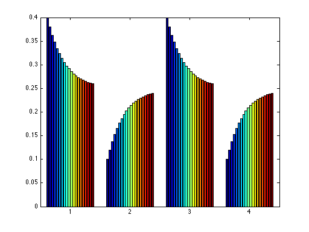
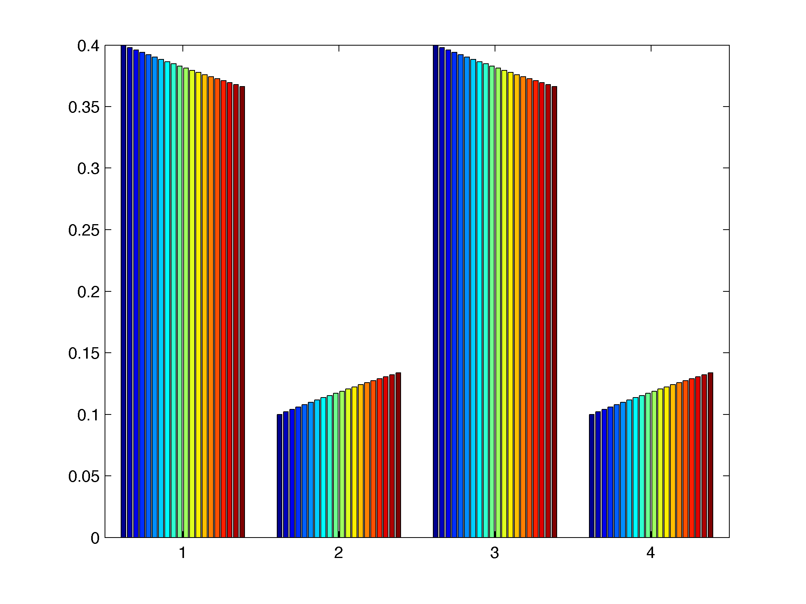

5 Markov models and transition matrices
5.1 Independence of random variables
Two events are independent if: \(P(A\|B) = P(A)\). Since by definition the conditional probability is \(P(A|B) = P(A\cap B)/P(B)\), the notion of independence can be expressed as the product rule, that states that two events are independent if and only if:\[ P(A \cap B) = P(B)P(A) \] Note that this allows us to shift the definition onto random variables, since probability of a value \(x\) of a random variable \(X\) corresponds to the probability of the event that gets mapped to \(x\). Thus, the same definition applied to two random variables \(X\) and \(Y\), in slightly different notation \[ P(X=x,Y=y) = P(X=x)P(Y=y) \] for all values of \(x\) and \(y\).
5.1.1 Example: strings of binary trials
The notion of independence is extremely useful for computing probability of more complicated random variables. If we assume that Bernoulli trials are independent of each other, then we can immediately calculate the probability of a string of 0s and 1s or Ws and Ls given the probability of a win is \(p\) and that of a loss is \(q\). For example: \(P(\{WWLWL\}) = p^3q^2\).
In practice, independence between processes is rarely perfectly true. However, computing the probability of two random variables without independence is such a pain that it is often very useful to make the independence assumption, and then test it against the data. If it stands up, you have a good predictive model, and if it does not, you have learned that two processes are somehow linked, which is very useful.
5.2 Random variables that change with time
A stochastic process is a sequence of random variables that change with time. The changes may be in discrete time steps that can be counted, and then we denote the random variable at time step \(n\) \(X_n\). If time is continuous, not broken up into countable steps, then there are infinitely many random variables \(X_t\) for any real number \(t\). The random variables are assumed to all be functions with the same domain (sample space), and with the same range (the numbers that they can assume). What changes over time is the probability distribution function of the random variables.
We already saw sequences of random variables in the case of repeated Bernoulli trials. Those trials were independent of each other and each random variable \(X_n\) had the same probability distribution. In (most) other situations, the probability distribution at time \(n\) depends on the distributions before, or the history of the stochastic process.
5.2.1 Computing the probability one step ahead
Let us say we know the probability distribution of \(X_n\), and we want to know the probability distribution of \(X_{n+1}\). By the definition of conditional probability, \(P(X_{n+1} = x \; and \; X_n = y) = P(X_{n+1} =x | X_n = y) P(X_n = y)\). Then, to find the total probability of \(X_{n+1} = x\), add up all the probabilities \(P(X_{n+1} = x \; and \; X_n=y)\) for all possible values of \(X_n\), since they add up to the whole sample space:
\[ P(X_{n+1} = x) = \sum _ {all \; y} P(X_{n+1} = x \; and \; X_n = y) = \sum _ {all \; y} P(X_{n+1} =x | X_n = y) P(X_n = y) \]
Therefore, to compute the probability distribution of the next random variable in time, we need to know the conditional probabilities of the next random variable given the previous one. These are called transition probabilities and are the basis of the models we will be studying.
5.2.1.1 Example: weather changes
Suppose that the weather changes in a random way (big surprise), and we divide it in only two states: sunny (\(S\)) and cloudy (\(C\)). Suppose that the weather tomorrow \(W_{n+1}\) depends on the weather today \(W_n\) with the following transition probabilities (perhaps obtained empirically over years of observations) given in the table below.
| sunny today | cloudy today | |
|---|---|---|
| sunny tomorrow | 0.8 | 0.3 |
| cloudy tomorrow | 0.2 | 0.7 |
Given these conditional probabilities, we can compute the probability distribution of the weather tomorrow given the weather today, e.g., if today is sunny, then the probability it will be sunny tomorrow is \(P(W_{n+1} = S ) =\) \[ = P(W_{n+1} = S | W_n = S) P(W_n = S) + P(W_{n+1} = S | W_n = C) P(W_n = C) = 0.8 * 1 + 0.3* 0 = 0.8\] Similarly \(P(W_{n+1} = C)=\) \[ = P(W_{n+1} = C | W_n = S) P(W_n = S) + P(W_{n+1} = C | W_n = C) P(W_n = C) = 0.2 * 1 + 0.7* 0 = 0.2\]
We can go further and compute the probability of the weather two days into the future, by applying the transition probabilities again: \(P(W\_{n+2} = S ) =\) \[P(W_{n+2} = S | W_{n+1} = S) P(W_{n+1} = S) + P(W_{n+2} = S | W_{n+1} = C) P(W_{n+1} = C) = 0.8 * 0.8 + 0.3* 0.2 = 0.7\] and also $P(W_{n+2} = C) = $ \[P(W_{n+2} = C | W_{n+1} = S) P(W_{n+1} = S) + P(W_{n+2} = C | W_{n+1} = C) P(W_{n+1} = C) = 0.2 *0.8 + 0.7* 0.2 = 0.3\]
These calculations could be written more succinctly as a product of a transition matrix \(M\) and the vector with the probability distribution. The probabilities for next day’s weather given sunny weather today are: \[ \left(\begin{array}{cc}0.8& 0.3 \\0.2 & 0.7\end{array}\right) \left(\begin{array}{c}1\\0 \end{array}\right) = \left(\begin{array}{c} 0.8\\0.2\end{array}\right) \] And the probabilities for the next day are computed by multiplying by the matrix again. So it can be written as multiplying the first probability distribution by the square of the transition matrix:
\[ \left(\begin{array}{cc}0.8& 0.3 \\0.2 & 0.7\end{array}\right) \left(\begin{array}{c}0.8\\0.2 \end{array}\right) = \left(\begin{array}{cc}0.8& 0.3 \\0.2 & 0.7\end{array}\right) \left(\begin{array}{cc}0.8& 0.3 \\0.2 & 0.7\end{array}\right) \left(\begin{array}{c}1\\0 \end{array}\right) = \left(\begin{array}{cc}0.8& 0.3 \\0.2 & 0.7\end{array}\right) ^2 \left(\begin{array}{c}1\\0 \end{array}\right) = \left(\begin{array}{c} 0.7\\0.3\end{array}\right) \] We can multiply the initial distribution by the transition matrix \(n\) times obtain the probability distribution for weather \(n\) days in the future.
5.3 Markov chains
The above is an example of generating a sequence of probability distributions for random variables known as a Markov chain. The random variables must have a finite number of possible values (known as states) so the probability distributions can be written as vectors \(P_n\), and the transition matrix \(M\) where each element \(\pi_{ij}\) (in the \(i\)-th row and the \(j\)-th column) is known as a transition probability \(P(X_{n+1} = x_i | X_n = x_j)\), where \(x_i\) and \(x_j\) are the \(i\)-th and the \(j\)-th state of the random variable \(X_n\). Then, as we saw above, the probability distribution at time \(n\) is given by: \[ P_{n+1} = MP_n \; \Longrightarrow P_{n} = M^nP_0 \] where \(P_0\) is initial probability distribution.
What makes such a stochastic process Markovian is a deep assumption which is implicit in our definition. We assumed that we can calculate the probability distribution of the variable at the next time knowing only the distribution at the present time. More precisely, we assumed that the conditional probability distribution at time \(n+1\), given the random variable at time \(n\), is independent of the knowledge of the random variable at time \(n-1\) or any previous time.
This is called the Markov property, and it can be written as follows: \[ P(X_{n+1} | X_{n} , X_{m}) = P(X_{n+1} | X_{n}), \; for \; m<n \]
5.3.1 properties of Markov transition matrices
The transition matrices, a.k.a. Markov matrices, have some special properties that help us compute the Markov chain they generate:
- By construction each column of a Markov matrix (with \(m\) states) has to add up to 1, because \[\sum_{i=1}^{m} \pi_{ij} = \sum_{i=1}^{m} P(X_{n+1} = x_i | X_n = x_j) = 1\] since all possible outcomes have to add up to 1.
- Multiplying a probability distribution vector by a Markov matrix preserves the property that all elements add up to 1 (check for yourself that this follows from the first property.)
- The eigenvalues of the Markov matrix are all \(|\lambda | <1\). This is important because to calculate powers of the matrix, we can use the diagonal form \(M = U \Lambda U^{-1}\) where \(U\) is the matrix of eigenvectors and \(\Lambda\) is the matrix of eigenvalues; then \(M^n = U \Lambda^n U^{-1}\). Therefore, each eigenvalue is raised to the \(n\)-th power, and given the property above, all the eigenvalues except for \(\lambda =1\) will decay. Those eigenvectors with eigenvalue unity are called stationary probability distributions.
- The elements of \(M\) are probabilities and therefore are between 0 and 1, inclusively. If all the elements are strictly greater than zero (and thus strictly less than 1), there is only a single eigenvalue equal to 1 and thus only a single equilibrium probability distribution.
5.3.2 Example: Hardy-Weinberg equilibrium
Here is an application of the concept of an equilibrium distribution, known as the Hardy-Weinberg equilibrium. This is a classic population genetics result for the distribution of frequencies of genotypes in a population. We assume that the population consists of randomly mating diploid individuals, and that we are only interested in two alleles of a gene: \(A\) and \(a\). For a diploid individual, there are three possible genotypes: \(AA\), \(aa\), and \(Aa\) (same as \(aA\)). The frequencies of these genotypes in the population are equivalent to the probabilities of a given individual possessing that genotype. Let us call the initial frequencies as follows: \(P_0(AA) = p_0\), \(P_0(aa) = q_0\), \(P_0(Aa) = r_0\).
The conditional probability of inheriting one \(A\) allele given one parent has \(AA\) is \(P (A | AA) = 1\), similarly \(P(A | aa) = 0\), and \(P(A | Aa) = 1/2\). Then we can calculate the total probability of inheriting an allele in the next generation is: \[ P(A) = P (A | AA)p_0 + P(A | aa) q_0 + P(A | Aa) r_0 = p_0 + r_0/2\] \[ P(a) = P (A | AA)p_0 + P(A | aa) q_0 + P(A | Aa) r_0 = q_0 + r_0/2\] The probability of having the genotype \(AA\) is the product of the two probabilities, because of the independence assumption in random mating. Thus we obtain the frequencies of the three genotypes in the next generation: \[P(AA) = P(A) P(A) = (p_0 + r_0/2)^2 = p_1\] \[P(aa) = P(a) P(a) = (q_0 + r_0/2)^2 = q_1\] \[P(Aa) = P(A) P(a) + P(a)P(A) = 2(q_0 + r_0/2)(p_0 + r_0/2) = r_1\]
The transition matrix can be written by assuming the transition probabilities \(P(AA | AA) = p + r/2\) (probability of offspring with genotype \(AA\), given that one parent has genotype \(AA\), is the probability of finding allele \(A\) in the population). Similarly, \(P(aa | aa) = q + r/2\), \(P(Aa | AA) = q + r/2\), and \(P(Aa | aa) = p + r/2\). Of course, \(P(aa | AA ) = P(AA | aa) = 0\). If the parent is heterozygous, then the conditional probability is \(P(AA | Aa) = 1/2( p + r/2)\), the product of the frequency of the allele \(A\) and the probability of \(A\) being passed on from the heterozygote (1/2). Similarly, \(P(aa | Aa ) = 1/2( q + r/2)\). Finally, the most complicated transition probability \(P(Aa | Aa) = P(A) 1/2 + P(a) 1/2 = p/2 + r/2 + q/2\). The transition matrix is then: \[ M = \left(\begin{array}{ccc}p + r/2 & 0 & p/2 + r/4 \\0 & q + r/2 & q/2 + r/4 \\ q + r/2 & p + r/2 & p/2 + q/2 + r/2\end{array}\right) \]
Here we can find the equilibrium distribution by requiring that \(M P_eq = P_eq\), which is equivalent to the following equations:
\[ p = p (p + r/2) + r (p/2 + r/4) = (p + r/2)^2\] \[ q = q(q + r/2) + r (q/2 + r/4) = (q + r/2)^2 \] \[ r = p(q + r/2) + q(p+r/2) + r (p/2 + q/2 + r/2) = 2(p + r/2)(q + r/2) \] Check that the three frequencies add up to 1, as they are supposed to. Note that these are the same expressions we derived above for the frequency distribution after 1 generation, only now the frequencies \(p\), \(q\), and \(r\) are the same on both sides. These are the conditions for the Hardy-Weinberg equilibrium in a randomly mating population with no selection.
5.3.3 Example: models of base substitution in DNA
The following is a summary of the material from Chapter 4 of Allman & Rhodes, Mathematical Models for Biology. Substitution mutations in DNA sequences can be modeled as a Markov process, where each base in the sequence mutates independently of others with a transition matrix \(M\). Let the bases A, G, C, T correspond to states 1 through 4, respectively. One possible model for base substitution from one generation to the next is based on the assumption that all substitution mutations are equally likely, and that the fraction \(\alpha\) of the sequence will be substituted each generation. Then the probability of any particular transition, say from T to C is \(\alpha/3\), while the probability of not having a substitution is equal to \(1-\alpha\). This is known as the Jukes-Cantor model and it predicts that the fraction of letters in a sequence at generation \(t+1\) depends on the distribution in generation \(t\) as follows:
\[ \left(\begin{array}{c} P_A \\ P_G \\ P_C \\ P_T \end{array}\right)_{t+1} = \left(\begin{array}{cccc}1-\alpha & \alpha/3 & \alpha/3 & \alpha/3 \\\alpha/3 & 1-\alpha & \alpha/3 & \alpha/3 \\\alpha/3 & \alpha/3 & 1-\alpha & \alpha/3 \\\alpha/3 & \alpha/3 & \alpha/3 & 1-\alpha\end{array}\right) \left(\begin{array}{c} P_A \\ P_G \\ P_C \\ P_T \end{array}\right)_t \] This model is very simple: it only considers substitutions, although other mutations are possible, e.g. insertions and deletions, although they are typically more disruptive and thus more rare, and it treats all substitutions as equally likely, which is not empirically true. The benefit is that the number \(\alpha\) is the only parameter in this model, which represents the mutation rate at each site per generation. This makes is easy to compute the eigenvectors and eigenvalues of the model in general. It turns out that the four eigenvectors do not depend on the parameter \(\alpha\), only the eigenvalues do:
\[ \left(\begin{array}{c} 1/4 \\ 1/4 \\ 1/4 \\ 1/4 \end{array}\right) \lambda =1; \; \left(\begin{array}{c} 1/4 \\ -1/4 \\ 1/4 \\ -1/4 \end{array}\right)\lambda =1-4/3\alpha; \; \left(\begin{array}{c} 1/4 \\ -1/4 \\ -1/4 \\ 1/4 \end{array}\right)\lambda =1-4/3\alpha; \; \left(\begin{array}{c} 1/4 \\ -1/4 \\ 1/4 \\ -1/4 \end{array}\right)\lambda =1-4/3\alpha \] Notice two things: first, the first eigenvector is the equilibrium distribution and has the same frequencies for all four bases. Second, the three eigenvectors with eigenvalues smaller than 1 have negative entries, so they cannot be probability distributions themselves (although as linear combinations with the first one, they may be, depending on the coefficients.) A computational sidenote: because the three non-equilbrium eigenvectors share the same eigenvalue, it is possible to choose multiple valid sets of eigenvectors. For instance, MATLAB returns different answers for the eigenvectors above. This is because of non-uniqueness of eigenvectors that share the same eigenvalue (a topic which we have avoided in this course, but is covered in linear algebra textbooks.)
Computationally, this allows us to predict the time evolution of a distribution of bases in a DNA sequence for any given initial distribution, by using repeated matrix multiplication as above. Figure \(\ref{fig:mc_base_sub}\) shows the results starting with a non-equilibrium base distribution for 20 generations, with different substitution rates. It is evident that for a faster substitution rate the approach to the equilibrium distribution is faster. This demonstrates an important role of the second-largest eigenvalue of the Markov matrix: it determines the speed of convergence to the equilibrium distribution (more on this later).
{#fig-JC-model layout-ncol=2}


Evolution of base distribution for different substitution rates, with bar graphs showing proportion of letters A, G, T, C from generation 0 to 20 :::
5.3.3.1 calculation of phylogenetic distances}
As we saw, the Markov model provides a means of measuring the time-dependent evolution of the probability distribution of each letter, starting with some initial distribution. In reality, we would like to answer the following question: given two DNA sequences in the present (e.g. from different species), what is the length of time they spent evolving from a common ancestor?
To do this, we need to some preliminary work. The first step is to compute the probability that a letter at a particular site remain unchanged after \(t\) generations. Because all the nucleotides are equivalent in the Jukes-Cantor model, we need to find \(P(X_t = A | X_0 = A)\). More generally, we can calculate the frequency distribution after \(t\) time steps as follows: \(P_t = M^t P_0\). In this case, \(P_0 = (1,0,0,0)\), which can be written as a sum of the four eigenvectors of the matrix \(M\):
\[ \left(\begin{array}{c} 1 \\ 0 \\ 0 \\ 0 \end{array}\right) = \left(\begin{array}{c} 1/4 \\ 1/4 \\ 1/4 \\ 1/4 \end{array}\right) + \left(\begin{array}{c} 1/4 \\ -1/4 \\ 1/4 \\ -1/4 \end{array}\right) + \left(\begin{array}{c} 1/4 \\ -1/4 \\ -1/4 \\ 1/4 \end{array}\right) + \left(\begin{array}{c} 1/4 \\ -1/4 \\ 1/4 \\ -1/4 \end{array}\right) \]
Therefore, the matrix \(M^t\) can be applied to each eigenvector separately, and each matrix multiplication is a multiplication by the appropriate eigenvalue. Thus,
\[ P_t = M^t P_0 = 1^t \left(\begin{array}{c} 1/4 \\ 1/4 \\ 1/4 \\ 1/4 \end{array}\right) + (1-4/3\alpha)^t\left( \left(\begin{array}{c} 1/4 \\ -1/4 \\ 1/4 \\ -1/4 \end{array}\right) + \left(\begin{array}{c} 1/4 \\ -1/4 \\ -1/4 \\ 1/4 \end{array}\right) + \left(\begin{array}{c} 1/4 \\ -1/4 \\ 1/4 \\ -1/4 \end{array}\right) \right) \] The first element of \(P_t\) is the probability of a nucleotide remaining \(A\) after \(t\) generation, and it is: $ P_t (A ) = 1/4 +3/4(1-4/3)^t $. For \(t=0\), the probability is 1, as it should be, and as \(t \rightarrow \infty\), \(P_t (A) \rightarrow 1/4\), since this is the equilibrium probability distribution. Note that the expression is the same for all the other letters, so we have found the expression for any nucleotide remaining the same after \(t\) generations.
Now let us get to the question of calculating the time that two sequences have evolved from each other. Denote by \(m\) the fraction of sites in two aligned sequences with different letters, and \(q\) is the probability of a nucleotide remaining the same, which is the given by the expression for \(P_t(A)\). Thus \(m = 1 - q = 3/4 - 3/4(1-4/3\alpha)^t\). This can be solved for \(t\): \[ t = \frac{\log (1 - 4/3 m)}{\log (1 -4/3 \alpha)} \]
However, we do not necessarily know the mutation rate \(\alpha\), so this formula is mainly of theoretical interest. Instead, we would like to calculate the phylogenetic distance between the two sequences, which is defined as \(d = \alpha t\), or the mean number of substitutions that occurred per nucleotide during \(t\) generations, with mutation rate \(\alpha\) (substitutions per nucleotide per generation). Note that this distance is not directly measurable from the fraction of different nucleotides in the two sequences, because it counts all substitutions, including those which reverse an earlier mutation, and cause the sequence to revert to its initial letter.
Now, let us assume \(\alpha\) is small, as typically the number of substitutions per generation per nucleotide is small [reference]. Then, by a Taylor expansion of the logarithm around 1, \(\log (1 -4/3 \alpha) \approx - 4/3\alpha\). Using the formula for \(t\) from above with this approximation, we find the Jukes-Cantor phylogenetic distance to be:
\[ d_{JC} = \frac{\log (1 - 4/3 m)}{ -4/3 \alpha} \alpha = -\frac{3}{4}\log (1 - 4/3 m) \] This formula has the correct behavior in the two limits: when \(m = 0\), \(d_{JC} = 0\) (identical sequences have zero distance), and when \(m \rightarrow 3/4\), \(d_{JC} \rightarrow \infty\), since 3/4 is the maximum possible fraction of differences under the Jukes-Cantor model. Thus, we have obtained an analytic formula for the phylogenetic distance based on a Markov chain model of substitutions.
5.3.4 Kimura model
One can devise more sophisticated models of base substitution. There are two classes of nucleotide bases: purines (A,G) and pyrimidines (C,T). One may consider the difference in rates of transitions (substitutions within the classes) and transversions (subtitutions of purines by pyrimidines and vice versa). This is known as the Kimura model and can be written as follows as Markov chain:
\[ \left(\begin{array}{c} P_A \\ P_G \\ P_C \\ P_T \end{array}\right)_{t+1} = \left(\begin{array}{cccc}1-\beta-\gamma & \beta & \gamma/2 & \gamma/2 \\ \beta & 1-\beta-\gamma & \gamma/2 & \gamma/2 \\ \gamma/2 & \gamma/2 & 1-\beta-\gamma& \beta \\ \gamma/2 &\gamma/2 & \beta & 1-\beta-\gamma \end{array}\right) \left(\begin{array}{c} P_A \\ P_G \\ P_C \\ P_T \end{array}\right)_t \]
where \(\beta\) is the rate of transitions and \(\gamma\) is the rate of transversions per generation. This model has two different parameters, and as those two rates are empirically different (transitions occur more frequently, since the bases are more chemically similar,) the model is more realistic. Whether or not it is worth the additional complexity depends on the question at hand.
5.3.5 Example: genetic drift as Bernoulli trials
Now we come to another model of genetic variation in a population. Consider a population of \(N\) haploid individuals with two genotypes \(A\) and \(a\). Suppose that there are \(k\) individuals with allele \(A\) (and therefore \(N-k\) individuals with allele \(a\)). Let the population stay constant at \(N\), and assume that each individual has an equal chance of passing on its allele to the next generation. It follows that any given offspring inherits the allele \(A\) with probability \(p = k/N\), and inherits allele \(a\) with probability \(1-p = (N-k)/N\). Then generating the next generation of \(N\) individuals is equivalent to \(N\) Bernoulli trials (coin tosses) with those probabilities. Let the random variable \(X_t\) stand for the number of individuals with allele \(A\) in generation \(t\). Then
\[ P(X_{t+1} = j | X_t = k) = C^N_j p^j (1-p)^{N-j} = \frac{N!}{j! (N-j)!} \left(\frac{N}{k}\right)^j \left(\frac{N-k}{k}\right)^{N-j} \]
This defines the transition probabilities of an \(N\)-state Markov chain. The probabilities of having \(j\) individuals with allele \(A\) can be computed solely from the probability distribution in the previous generation. These transition probabilities are dependent only on the values of respective states \(j\) and \(k\), and the population size \(N\), so the transition matrix is constant through the generations.
Note that there are two states from which there is no escape: \(X_t = 0\) (all \(a\)) and \(X_t = N\) (all \(A\)). Since we did not account for mutation, if a population randomly drifts to either of the two states, it will remain there. This is known as fixation of the allele \(a\) or \(A\) in the population.